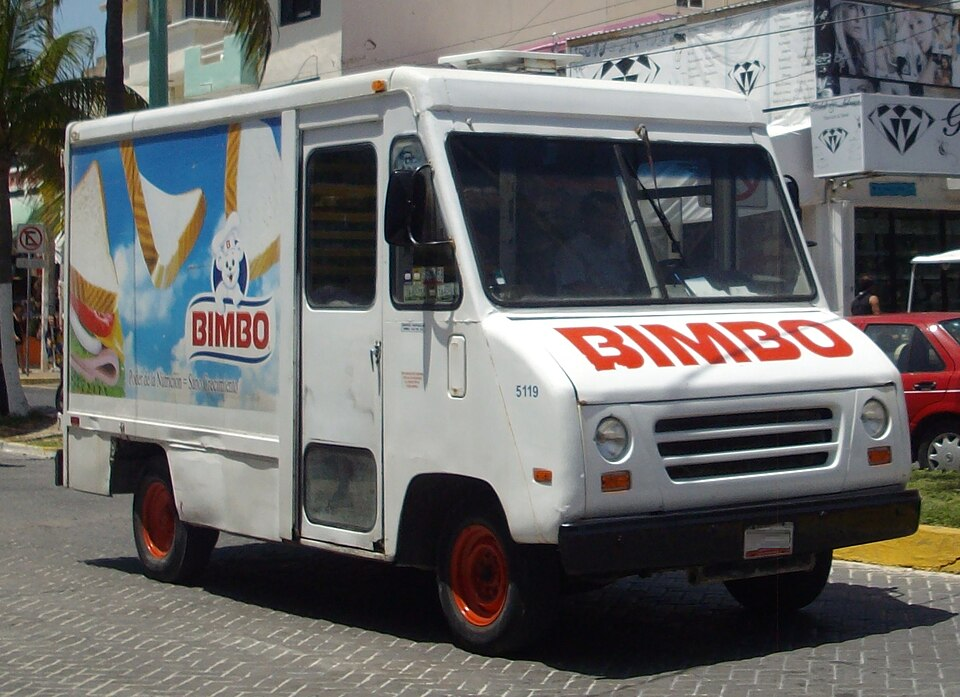

Actividad 17 · Empresarios mexicanos
Fundador de Bimbo (1918-2017). Convirtió el pan de caja en una de las panificadoras más grandes del planeta sin perder de vista a su gente.

Nace en la Ciudad de México, hijo de inmigrantes catalanes que tenían la pastelería El Molino.
Funda Panificación Bimbo con un pequeño grupo de socios. El primer producto: pan de caja envuelto en celofán, algo nuevo en México.
Nace Marinela y la empresa pasa del pan a los pastelitos.
Llega a Estados Unidos y a Centroamérica; empieza la expansión internacional.
Con su hijo Daniel Servitje al frente, Grupo Bimbo compra marcas en Estados Unidos, Canadá, Europa y Asia y se vuelve la panificadora más grande del mundo.
Muere a los 98 años. Bimbo opera en más de 30 países.
Servitje decía que la empresa tiene una función económica y una social, y que las dos pesan igual. Por eso Bimbo construyó escuelas y servicios para sus trabajadores y promovió la idea de una empresa "altamente productiva y plenamente humana".